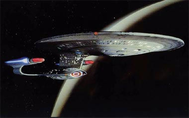
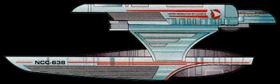
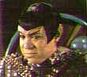
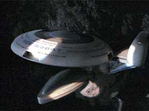
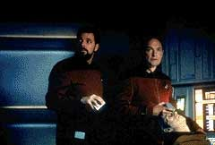
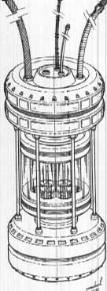

|
por
Fernando Penteriche
Sempre foi perguntado o porqu das
naves da Federao no possurem o famoso "cloaking
device", o dispositivo de camuflagem utilizado nas naves
Klingons e Romulanas. J foi especulado que o motivo seria o
formato das naves da Federao, que no permitiriam o uso de
tal disposivo (algo desmentido no episdio da Srie Clssica
"The Enterprise Incident", quando a Enterprise
original se camufla), ou ainda que a Federao, uma organizao
pacifista, no permitiria tais dispositivos em suas naves.

Isso sempre foi muito nebuloso para os fs. Como uma velha
ave-de-rapina Klingon do sculo 23 pode ter camuflagem e a nave
capitnea da Federao no sculo 24, a Enterprise-D, no o
tem? A resposta um Tratado, como visto em "The Pegasus",
excelente episdio do 7 ano e um dos poucos que se salvam dessa
fraqussima temporada.
Tudo
comea na data estelar 47457.1, em 2370, quando a Enterprise, em
uma misso rotineira de pesquisa, e ao mesmo tempo celebrando o
tradicional "Captain Picard's Day" (um evento anual para
as crianas da nave), recebe novas ordens para encontrar-se com o
almirante Erik Pressman e seguir rumo a um cinturo de asteride
no sistema Devolis, prximo fronteira Romulana.
Will
Riker serviu a bordo da USS Pegasus, uma nave classe Oberth (como
a USS Grissom de Jornada III), quando era apenas um oficial recm-sado
da Academia. Seu capito na poca foi o mesmo Erik Pressman,
hoje almirante. Vale ressaltar que a Pegasus era uma nave que
testava muitas novas tecnologias, e algumas delas esto a bordo
da Enterprise, lanada sete anos aps sua destruio.

At hoje, a histria que se acreditava era que a Pegasus havia
sofrido srios problemas enquanto a tripulao fazia
experimentos com seu ncleo de dobra. Houve uma exploso, a nave
foi destruda, muitos tripulantes morreram. S alguns poucos
conseguiram escapar em um casulo de fuga, entre eles Riker e o
capito Pressman.
Voltando ao presente: o motivo da ida da Enterprise ao cinturo
de asterides que a Pegasus no foi completamente destruda,
como todos pensavam. Um espio da Federao no Imprio
Romulano passou a informao de que os Romulanos descobriram
alguns destroos da nave prximos ao cinturo de asterides do
sistema Devolis. A misso da Enterprise ento seria chegar
primeiro, encontrar e sumir com esses destroos antes dos
Romulanos, pois muita tecnologia da Federao est por l, e
se cair nas mos dos inimigos...
 A
Enterprise, chegando no local, encontra a "Ave de
Guerra" Romulana Terix, examinando os asterides em
"uma misso cientfica sem importncia", segundo seu
comandante Sirol. Fica acordado entre as partes que as naves da
Federao e do Imprio podem pesquisar sem problemas, uma no
se metendo na vida da outra.
Algumas horas depois, descoberto: a USS Pegasus (ou partes
dela) est dentro de um grande asteride do cinturo. A tripulao
da Enterprise consegue enganar a nave Romulana, que nem desconfia
que est to perto do objetivo desejado.
Enquanto isso, Picard descobre atravs de um registro antigo (que
ele conseguiu cobrando muitos favores de oficiais de altos cargos
da Federao), que na verdade houve um MOTIM a bordo da Pegasus
antes de sua destruio. Riker ento recebe uma ordem (em
particular) de Picard para que revele a verdade a ele, j que um
motim em uma nave da Federao algo impensvel, e ainda h
o fato de que isso ficou escondido em alguns obscuros arquivos da
Federao por 12 anos! Riker recusa-se a falar a verdade, sob
ordens do almirante Pressman. Picard ento d um ultimato
Riker: se a Enterprise sofrer alguma ameaa por conta da misso
que Riker no quer confidenciar ele, o capito ento far
uma sria reescala na cadeia de comando da nave, e Riker perder
seu posto de primeiro-oficial. Mesmo assim Riker no cede, e
Picard fica s cegas na misso.
 A
USS Pegasus realmente est dentro do asteride, e (quase) ningum
sabe explicar o que aconteceu ( bvio que Pressman e Riker
sabem demais). Pressman ento ORDENA que a Enterprise seja levada
Pegasus, ENTRANDO dentro do asteride. Picard contra, mas
como o almirante quem manda na misso, ele acaba aceitando sob
forte objeo, registrada no dirio de bordo. Ao chegar dentro
do asteride, prximo Pegasus, uma imagem chocante e inexplicvel:
a nave est inserida em rocha slida, como se tivesse se
teletransportado para l. Pressman decide ento descer para a seo
de engenharia da Pegasus, que est intacta, junto com Riker, para
resgatar uma valiosa pea de equipamento. Enquanto os dois esto
na seo de engenharia, a nave Romulana (com a famosa desculpa
do "foi sem querer") fecha a entrada do asteride,
deixando a Enterprise presa dentro. Pressman e Riker so chamados
rapidamente para voltar Enterprise, e Pressman traz um
equipamento que estava conectado aos sistemas da Pegasus.
 Mas
o comandante Sirol bonzinho! Ele prope Picard que TODA a
tripulao da Enterprise se teletransporte para a nave Romulana,
onde aps uma breve estadia em Romulus, seriam levados
gentilmente de volta ao espao da Federao. Picard recusa,
logicamente, pois se isso acontecer os Romulanos podero passar a
mo em no uma, mas DUAS naves da Federao: a Pegasus e a prpria
Enterprise!!!
No possvel utilizar os feisers para abrir um buraco e
fugir, nem o uso de torpedos ou qualquer outra arma. Porm Riker
tem a soluo. A pea que Pressman trouxe da Pegasus na
verdade um PROTTIPO DE UM DISPOSITIVO DE CAMUFLAGEM DA FEDERAO!
E alm de deixar a nave invisvel, esse prottipo ainda
transforma a nave em uma espcie de nave-fantasma, ou seja, alm
de ficar invisvel, ela pode passar pela matria como se ela no
estivesse l... a nica chance que a Enterprise tem de
escapar, mesmo com os protestos de Pressman, que diz que a
carreira de Riker acabou por esse segredo ter sido revelado.
Picard aceita a soluo de Riker e ordena a LaForge e Data que dem
um jeito de conectar este dispositivo na Enterprise, para que
possam escapar.
 Algumas
horas de trabalho duro e a Enterprise-D pela primeira e nica vez
em sua histria utiliza-se de um dispositivo de camuflagem.
Passando pela rocha slida que compe o asteride, a nave
consegue se livrar da armadilha dos Romulanos. Picard ento
ordena que, mesmo vista da nave inimiga, a Enterprise desligue
o sistema de camuflagem. J temendo um problema srio com os
Romulanos, por ter desobedecido ao TRATADO DE ALGERON --o acordo
de paz entre os Romulanos e a Federao, aps o incidente de
Tomed em 2311, reafirma a existncia da ZONA NEUTRA ROMULANA,
proibindo a entrada nesse setor por naves dos dois governos, sem
autorizao e proibindo a Federao de desenvolver um sistema
de camuflagem para suas naves--, o capito envia uma mensagem ao
comandante Sirol, dizendo que a Federao contatar o Imprio
Romulano em breve para dar explicaes.
Pressman fica possesso com a atitude de Picard, revelando um dos
maiores segredos da Federao ao inimigo, porm nada ele pode
fazer. O capito ordena que ele seja preso pela quebra do
Tratado, e Riker sente-se no dever de ser encarcerado tambm.
Depois disso, nunca mais ouviremos falar de dispositivo de
camuflagem em naves da Federao, at a chegada da Defiant, em Deep
Space Nine. Isso assunto para o meu amigo Luiz Castanheira
escrever em sua coluna de Deep Space Nine, mas apenas
resumindo, a Federao cedeu aos Romulanos todas as informaes
que tinha do Dominion, na poca, em troca desse sistema de
camuflagem para a Defiant. E ficou combinado que a nave apenas
utilizaria este sistema no quadrante Gama.
Observao: No episdio final da Nova Gerao, "All
Good Things...", vista a Enterprise-D 25 anos no
futuro da srie, com sistema de camuflagem. Porm, como aquele
era um futuro alternativo manipulado pela entidade Q, no pode
ser considerado.
|